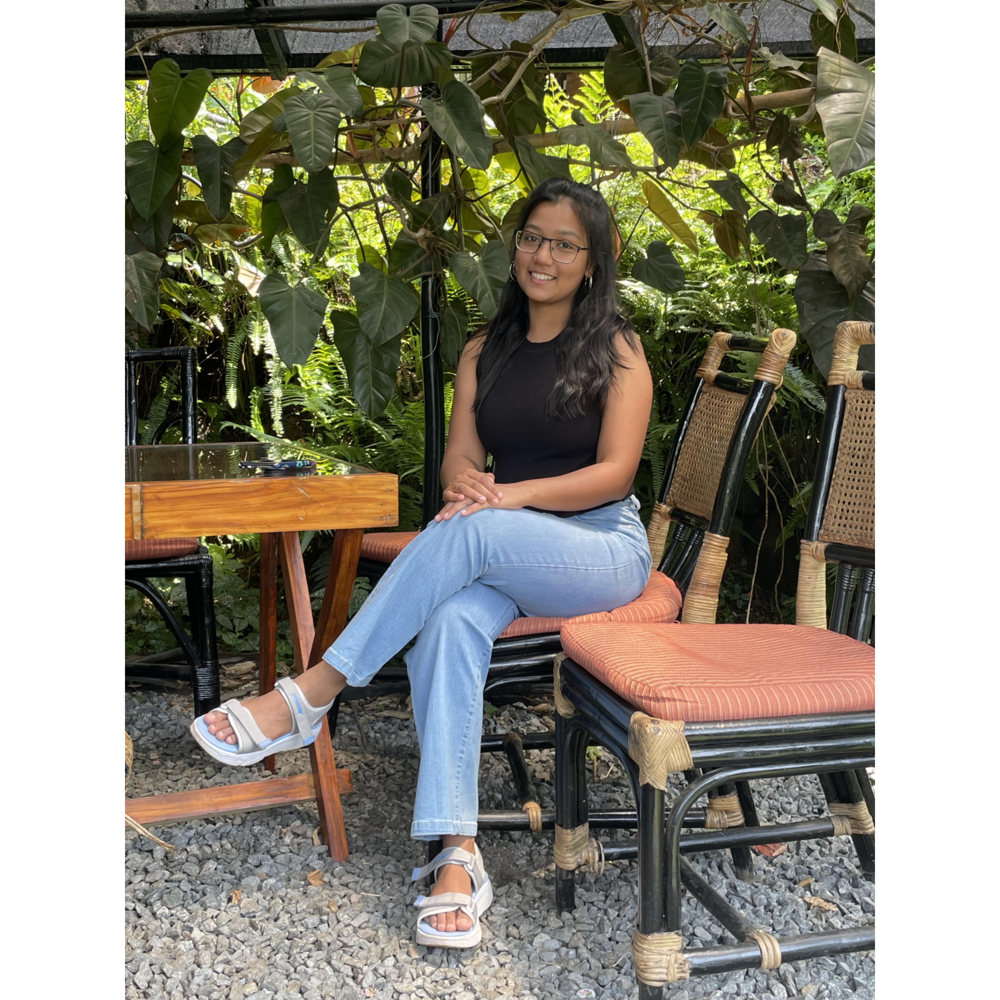

I am a Research Intern at Adobe Research, Bengaluru, and an MS by Research student in Computer Science at IIIT Hyderabad, where I worked in CSTAR Lab and was advised by Dr. Pawan Kumar.
My research focuses on making large language models more efficient and more capable as agents — spanning LLM inference optimization, model compression, and agentic systems. At Adobe, I am working on context management in agentic LLM harnesses, using agent reasoning traces to improve retrieval and reduce wasted context.
I came to research through curiosity: in my undergrad at IISER Bhopal I kept following whatever problem looked interesting; computer vision, NLP, systems until it stopped being a habit and became a direction. I am currently looking for full-time roles in AI/ML research and engineering.
My primary interest is the intersection of LLM efficiency and agentic capability, two goals I think are converging rather than competing. A model that wastes its context window on noise cannot reason well over long horizons. My recent work spans training-free decoding strategies (hybrid autoregressive-diffusion generation), rank-structured model compression, and context management in agentic harnesses. I am drawn to ideas that are clever rather than just expensive — getting more from what is already there.
| Jun 2026 | Paper accepted at ACL 2026 (GEM Workshop) — Speculative Refinement: A Hybrid Autoregressive Diffusion Decoding Strategy. |
| May 2025 | Started Research Internship at Adobe Research, Bengaluru — context rot in agentic LLM harnesses. |
| Jan 2025 | Paper accepted at CODS 2025 (ACM IKDD) — Hierarchical Sparse Plus Low-Rank Compression of LLM. |
| Jan 2025 | Placed 2nd at IndoML Datathon 2025. |
| Jul 2024 | Started MS by Research at IIIT Hyderabad, joining CSTAR under Dr. Pawan Kumar. |
| 2024 | Selected as Amazon ML Summer School 2024 mentee. |
| 2023 | Top-15 finalist, Smart India Hackathon 2023. |